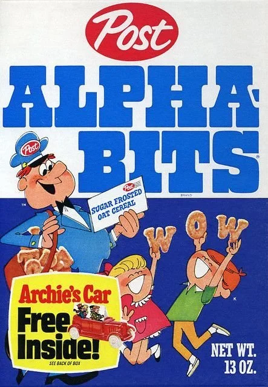

Alphabits™ Archival Project
Inspired by the discontinuation of Alphabits cereal in May of 2021, this archival project seeks to document the breakfast cereal by 3D scanning and averaging the industrially produced letterforms for one of the few remaining boxes of the cereal. This dimensional typeface will then be used in an augmented reality installation that places viewers within a virtual bowl of cereal.
